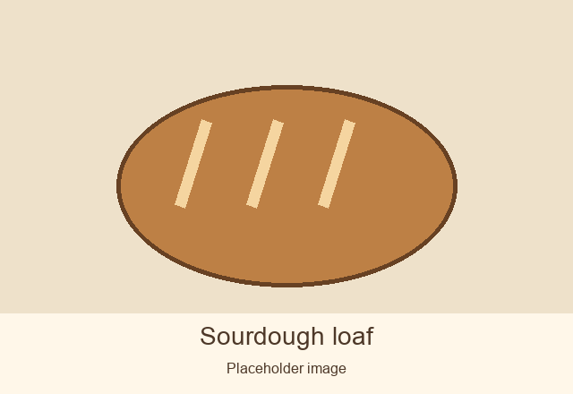
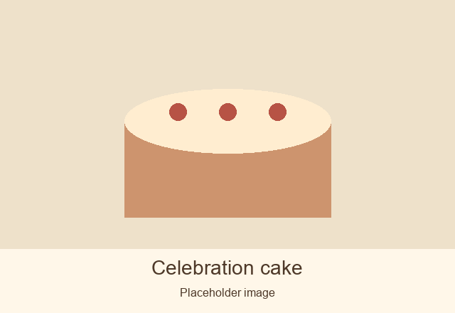
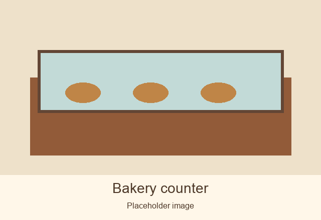

Welcome to Maria's Bakery
Bread, croissants, and cakes, baked in small batches.

What we bake
We bake in small batches. Items may sell out before closing.
Croissants

Celebration cakes

Prices depend on size and what you would like. Call to discuss your cake.
When to visit
Draft hours from Maria's voice note. The flyer lists different hours; confirmation is needed.
| Day | Hours |
|---|---|
| Monday | Closed |
| Tuesday to Sunday | to |
A little about us
A place to pick up breakfast, enjoy something baked in small batches, and stop for a little chat.

Come say hello
Maria's Bakery412 Larch Street

The phone number is awaiting confirmation.
If we miss your call, please try again. We may be busy baking.